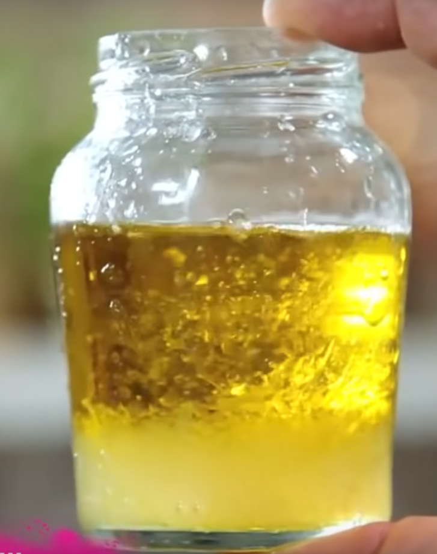

Salad Dressing

Homemade salad dressing
This is a homemade salad dressing using olive oil, an acid and optional flavours.
Ingredients
- Jar
- Olive Oil
- Acid - Red Wine Vinegar, Lemon Juice, Grape Fruit Juice, Lime Juice, Balsamic Vinegar, White Wine Vinegar, Champagne Vinegar
- Salt and Pepper
- Dijon Mustard
Instructions
- Fill Jar with Olive Oil to approximately two thirds.
- Add acid till the ratio is 3:1. The oil and acid will seperate.
- Add pinches of Salt and Pepper.
- Add teaspoon of Dijon Mustard.
- Shake Jar till ingredients are mixed then taste. Aim for slightly too acidic because salad will dilute the flavour.
- You could add yoghurt, or chopped herbs, or chopped chilli depending on your preferences.